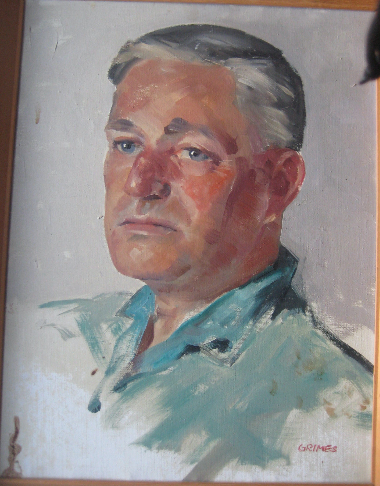

Paul Joseph Anthony Innes 1906 - 1977
[ Home ] | [ Calendar ] | [ Surnames Index ] | [ Family History ]The son of Innes and May Deal, Paul Innes, the second cousin once-removed on the father's side of <a href="I1.html">Nigel Horne</a>, was born on Jun 28, 1906<span class="citation">1</span> and married Alice Traill (with whom he had 1 child, Jocasta Claire Traill) in Bedford, Bedfordshire, England around Aug 1933<span class="citation">3</span>. In 1977, he lived at Andrew's Farm Lane, Dunmow, Essex, England. <p>He died on Feb 4, 1977 in Uttlesford, Essex<span class="citation">1,2</span>.
Parents
- May was born c. May 1880
Children
- Jocasta Claire Traill was born on May 21, 1934
Citations
- England & Wales deaths 1837-2007 - Findmypast
- England & Wales Government Probate Death Index 1858-2019 - Findmypast
- England & Wales Marriages 1837-2005 - Findmypast
Media
Paul Innes - Portrait

England & Wales marriages 1837-2005 - BMD/M/1933/3/AZ/000748/098
England & Wales deaths 1837-2007 - BMD/D/1977/1/AZ/000603/109
England & Wales Government Probate Death Index 1858-2019 - GBOR/GOVPROBATE/C/1977-1977/00110984
Family Tree

Generated by Ged2Site. Last updated on Jul 20, 2025